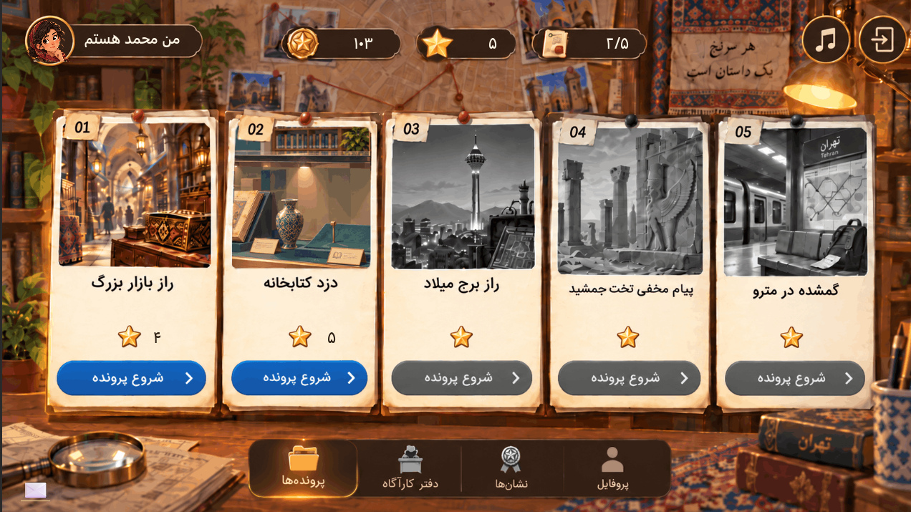

اولین بازی قلق
اولین بازی قلقاستودیوی مستقل بازیسازی
قلق استدیو
GHELEGH STUDIO
بازیهایی برای کشف کردن؛ میان قصه، کنجکاوی و انتخابهای کوچک.
داستانمحورمعماییفارسی

رَدینورد پای تازه
پروندهٔ ۰۱ · در حال توسعه
داستان را دنبال کننشانهها را ببینجواب را پیدا کن
دربارهٔ ما
قصه را به بازی تبدیل میکنیم.
قلق استدیو یک استودیوی مستقل بازیسازی است که روی تجربههای داستانی، معما و بازیهای فارسی تمرکز دارد.
ما به بازیهایی فکر میکنیم که بازیکن را به دیدن دقیقتر و پرسیدن دعوت میکنند.
بیشتر دربارهٔ استودیوبازیهااولین بازی قلق
جهانهایی برای دنبال کردن
اولین بازی قلقبهزودیپروژهٔ بعدی
یک جهان تازه در راه است.
جای خالی یک ماجرا
برای پروژههای آیندهٔ قلق استدیو.